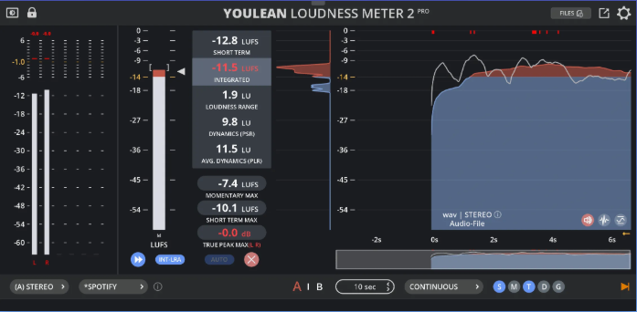
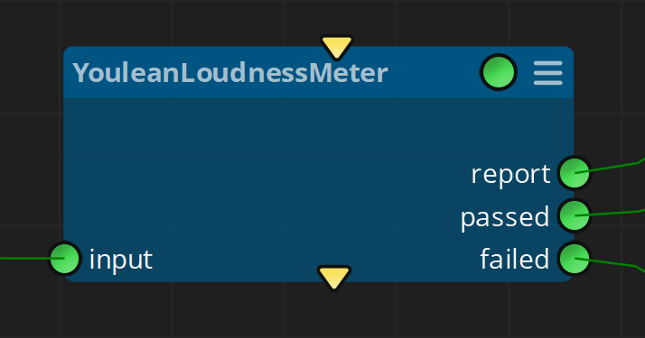
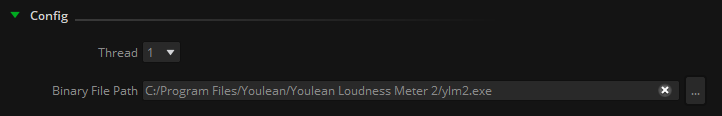
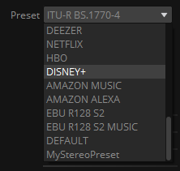
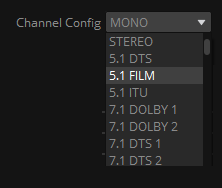
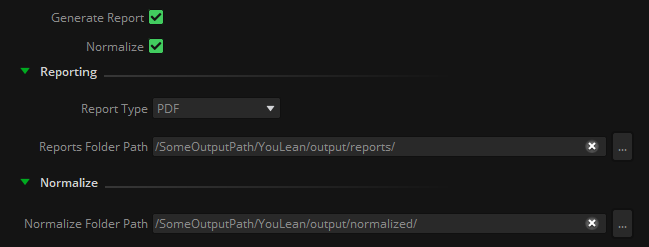
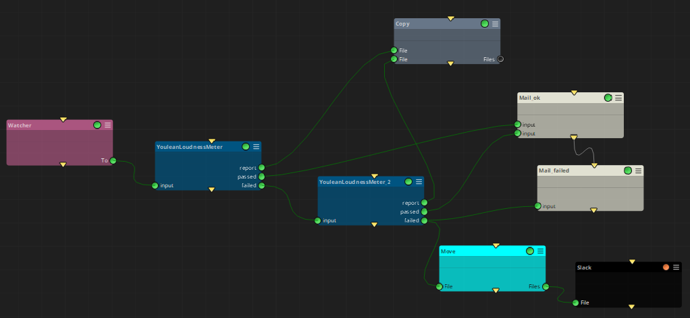

|
<< Click to Display Table of Contents >> Youlean Loudness Meter |
This node allows the automation of analysis, report, and normalize audio files based on the desired presets, channel configuration, and loudness ranges configured.
It consists on an integration with Youlean Loudness Meter application, used to find the true perceived loudness of any audio file, preparing it for TV or streaming services release.

Note: Requires to install (and license) Youlean Loudness Meter application.
You can watch an introductory tutorial about usage in Mistika Workflows here: https://youtu.be/WWyH_Oldks4
Note: It is highly recommended to use the templates provided in the Templates panel for learning this node, specially when wanting to send QC reports in automated way.

Once the node is configured with the ylm2 binary file path, the 'Preset' and Channel Config' pulldown menus will show the available options. In the case that custom presets were created, it will retrieve the list of the *.ylmpreset files located in the default saved path location.



The node can work in two different modes, depending on the activated toggles:
Generate Report will export the corresponding analysis results in the file format selected (.pdf, .png, .csv...)
Normalize will attempt to normalize the input file(s) when it is out of values of the QC ranges indicated.

In both modes, all files that do not accomplish with the ranges indicated in the QC, or that couldn't be normalized, will be placed in the 'failed' output connector.
In this way you can concatenate several Youlean Loudness Meter nodes, taking different approaches depending on the result of the previous analysis.
Please refer to the Template provided to learn more about it:

Input: Input media files
report: QC report
passed: Media files that passed the QC
failed: Media files not passing the QC
Preset: Select a preset.
Channel Config: Select audio channels configuration.
Generate report: Generate a QC report.
Normalize: Attempt to normalize the audio loudness.
Reporting (Report type, Reports Folder Path): If Generate Report is active, creates a QC report in the Reports folder path
Normalize
QC (Integrated Min/Max, Loudness Range Min/Max, Integrated Dial Min/Max, Loudness Dial Min/Max, Speech Content Min/Max, Average Dynamics Min/Max, Momentary Min/Max, Short-term Min/Max, True PEak (TP) Min/Max): Set ACCEPTABLE range values for the QC report. For more details see Youlean documentation .
Config